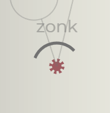

Ana Silahlar
Ana silahlar, Glyphica'daki başlangıç silahlarıdır ve oyun oynanışında merkezi bir rol oynar. Bir düşmanın üzerinde görüntülenen bir kelimeyi yazdığınızda, ana silah o düşmana hedef olarak kilitlenir. Her ana silahın kendine özgü etkileri ve mekanikleri vardır ve etkili bir şekilde kullanmak için farklı stratejiler gerektirir.
Bazı ana silahlar yazma hızına (WPM) vurgu yaparken, diğerleri daha taktiksel bir yaklaşım gerektirir. Oyundaki diğer silahlar gibi, ana silahlar da yükseltilebilir ve evrimleştirilebilir, ilerledikçe yetenekleri ve etkinlikleri artırılabilir.
Ana Silahların Listesi
TekrarlayıcıIsı LazeriYayılım AteşiSıçrayan AtışTekrarlayıcı
Etiketler: Kinetik, Ana
Kısa aralıklarla çok sayıda mermi ateşleyen yıkıcı bir silah.
Evrimler
Ad |
Açıklama |
| Buzul |
Etkiler:
Soğuk Hasarı: +10
Donma Şansı: 3%
Temel hasarı etkiler ve Soğuk hasarı değiştiricilerinden etkilenir. |
| Buzul II |
Etkiler:
Soğuk Hasarı: +20
Kinetik Hasar: -10
Temel hasarı etkiler. |
| Sektirme |
Etkiler:
Roket Zinciri: 3
Tekrarlayıcı mermiler yakındaki rastgele hedeflere seker ve ilkinden sonraki darbelerde 50% hasar verir. |
| Sektirme II |
Etkiler:
Roket Zinciri: +2 |
| Av tüfeği |
Etkiler:
Mermi Sayısı: +5
Mermi Yayılımı: +400%
Kinetik Hasar: -10
Tekrarlayıcı artık geniş yayılıma sahip, daha zayıf mermilerden oluşan bir küme ateşliyor. Hasar değiştirici temel hasarı etkiler. |
| Av Tüfeği II |
Etkiler:
Mermi Sayısı: +5
Mermi Yayılımı: +100% |
| Patlayan Mermiler |
Etkiler:
Patlayıcı Hasar: +5
Kinetik Hasar: -10
Temel hasarı etkiler. Tekrarlayıcı artık küçük bir yarıçapta patlayıcı hasar veren patlayıcı mühimmatlar kullanır. |
| Patlayan Mermiler II |
Etkiler:
Patlayıcı Hasar: +10
Kinetik Hasar: -10
Tekrarlayıcı mermilerin patlama menzili biraz artırıldı. |
Yükseltmeler
Ad |
Açıklama |
| Güçlendirilmiş Öğrenme |
Evrim: +10 Öldürme |
| Savaş Verileri |
Evrim: +20 Öldürme |
| Usta Tutelage |
Evrim: +30 Öldürme |
| Full Metal Jacket |
Hasar: +10% |
| Zırh Delici Yükseltme |
Hasar: +20% |
| Deliş Güçlendirme |
Hasar: +30% |
| Gelişmiş Hedefleme |
Kritik Şansı: +1%
Kritik Hasar: +50% |
| Hassas Yönlendirme Sistemi |
Kritik Şansı: +2%
Kritik Hasar: +100% |
| Kartal Göz Entegrasyonu |
Kritik Şansı: +3%
Kritik Hasar: +200% |
Isı Lazeri
Etiketler: Isı, Ana, Zamanla Hasar
Zamanla hasar veren, isabetli, yoğunlaştırılmış ışıktan oluşan sabit bir ışın ateşler.
Evrimler
Ad |
Açıklama |
| Buz Işını |
Etkiler:
Isı Hasarı: -25
Soğuk Hasarı: +25
Donma Şansı: 8%
Temel hasarı etkiler. Isı Işını hasar türü Soğuktur ve Donma etkisi yaratma şansı artar. |
| Buz Işını II |
Etkiler:
Soğuk Hasarı: +20
Temel hasarı etkiler. |
| Yansıma |
Isı Işını artık düşmanların içinden geçer ve ekran kenarından 2x defa yansır. |
| Yansıma II |
Isı Işını artık ekran kenarından 4x yansıyor. |
| Çift Bıçaklı |
Başka bir ışın ters yönde ateş eder. Tüm evrimler ve yükseltmeler her iki ışına da uygulanır. |
| Patlatıcı |
Etkiler:
Atış Hızı: +500%
Isı Işını sabit bir ışın yerine bağımsız, çok vuruşlu bir lazer mermisi ateşler ve bu hala bir D.O.T. silahı olarak sayılır. |
| Blaster II |
Etkiler:
Mermi Uzunluğu: +100%
Hasar: +40% |
Yükseltmeler
Ad |
Açıklama |
| Füzyon Çekirdeği |
Evrim: +10 Öldürme |
| İlkel Alev |
Evrim: +20 Öldürme |
| Kıyamet Cehennemi |
Evrim: +30 Öldürme |
| Vahşi Alev |
Hasar: +10% |
| Yoğun Isı |
Hasar: +20% |
| Kıyamet Patlaması |
Hasar: +30% |
| Yakınsama |
Işın Kalınlığı: +20%
(Menzil) |
| Radyans |
Işın Kalınlığı: +40%
(Menzil) |
| Işın Hüzmesi |
Işın Kalınlığı: +60%
(Menzil) |
| Hızlı Ateşleme |
Atış Hızı: +10% |
| Alev Hızı |
Atış Hızı: +20% |
| Cehennem Dalgası |
Atış Hızı: +30% |
Yayılım Ateşi
Etiketler: Patlayıcı, Ana
Bir hedefe ve çevresine patlayıcı roketlerden oluşan bir yaylım ateşi açar. Zamanla şarj olur.
Evrimler
Ad |
Açıklama |
| Roket Dizisi |
Baraj artık mühimmat çubuğu başına 2 - 5 yerine 3 - 6 füze ateşleyecek. |
| Roket Dizisi II |
Baraj artık mühimmat çubuğu başına 3 - 6 yerine 4 - 7 füze ateşleyecek. |
| Sismik Mühimmat |
Füzeler patlamak yerine kendilerini yere gömer ve sonraki birkaç saniye boyunca patlayıcı darbeler üretir. |
| Sismik Mühimmat II |
Etkiler:
Menzil: 25%
Süre: 25% |
| Tedarik |
Artık tedarik alımları ortaya çıkacak. Bu alımları etkinleştirmek ana silahınızı tamamen yeniden dolduracak ve bir sonraki atışa 30% hasar artışı sağlayacak. |
| Yeniden Tedarik II |
Artık tedarik alımları ayrıca bir sonraki atışa 30% patlama menzili artışı kazandıracak. |
Yükseltmeler
Ad |
Açıklama |
| Üstün Baraj |
Evrim: +10 |
| Nihai Kuşatma |
Evrim: +20 |
| Kıyamet Yaylım Ateşi |
Evrim: +30 |
| Etki Patlaması |
Hasar: +10% |
| Yıkım Darbesi |
Hasar: +20% |
| Kıyamet Patlaması |
Hasar: +30% |
| Uzun Menzil |
Menzil: +10% |
| Uzun Menzilli Yük |
Menzil: +20% |
| Geniş Açı Saldırısı |
Menzil: +30% |
| Hızlı Yeniden Yükleme |
Yeniden Yükleme Hızı: +10%
(Ateş Hızı) |
|
|
| Hızlı Yeniden İkmal |
Yeniden Yükleme Hızı: +20%
(Ateş Hızı) |
|
|
| Hızlı Yeniden Yükleme |
Yeniden Yükleme Hızı: +30%
(Ateş Hızı) |
|
|
Sıçrayan Atış
Etiketler: Kimyasal, Ana, Zamanla Hasar
Rakiplerinizi sakatlamak ve onlara zarar vermek için yapışkan madde kürelerini ateşleyin.
Evrimler
Ad |
Açıklama |
| Balçık Baloncuğu |
Balçık Baloncuğu Sıçrama Bölgeleri içinde ortaya çıkar.
Aktifleştirildiğinde, Balçık Baloncuğu patlar, küçük bir yarıçapta hasar verir ve ek Sıçrama Bölgeleri oluşturur. |
| Balçık Baloncuğu II |
Balçık Baloncuğu görülme sıklığı arttı.
Balçık Baloncuğu süresi dolduğunda otomatik olarak patlama olasılığı %50. |
| İstila |
Sıçrama Atışı Etkileri:
Durum Etkisi Şansı: +5%
Global Etkiler:
Durum Etkisi Hasarı: +30% |
| İstila II |
Durum Etkileri tarafından öldürülen düşmanlar Sıçrama Bölgelerine patlar. |
| Lav |
Etkileri:
Kimyasal Hasar: -100%
Isı Hasarı: +40
Temel hasarı etkiler. Sıçrama Atışı hasar türü Isı olur. |
| Lav II |
Etkileri:
Isı Hasarı: +20
Temel hasarı etkiler. |
| Virülans |
Sıçrama Bölgesi Etkileri:
Süre: -50%
n Sıçrama Bölgeleri yavaşça büyür. |
Yükseltmeler
Ad |
Açıklama |
| Verimli Zehir |
Evrim: +10 |
| Afet Ustası |
Evrim: +20 |
| Veba Getiren |
Evrim: +30 |
| Zehir Bombası |
Hasar: +10% |
| Zehir Patlaması |
Hasar: +20% |
| Kıyamet Bulutu |
Hasar: +30% |
| Sızlayan Buhar |
Menzil: 10% |
| Nörotoksin Yüklemesi |
Menzil: 20% |
| Stratosfer Sızıntısı |
Menzil: 30% |
| Yavaş Dağılma |
Süre: 10% |
| Uzatılmış Ömür |
Süre: 20% |
| Sonsuz Serpinti |
Süre: 30% |
Seviye Yükseltme Silahları
Seviye yükseltme silahları, seviye atladıkça bir koşu sırasında elde edilir. Seçildikten sonra, silah cephaneliğinize eklenir. Her silahın kendine özgü bir etkinleştirme yöntemi vardır, ancak çoğu ana silahla yazma ve hedefleme yoluyla tetiklenebilir.
Bu şekilde en fazla dört silah elde edilebilir. Bir silah cephaneliğinize eklendiğinde, yükseltmeleri seviye yükseltme havuzunda kullanılabilir hale gelir ve ilerledikçe yeteneklerini geliştirmenize olanak tanır.
Seviye Yükseltme Silahlarının Listesi
HayaletMuhafızTesla MadeniOsilatörMeteorAvcıKesiciMayın tarlasıBıçak TuzağıHayalet
Etiketler: Kinetik, Dron
Glifleri içeren kelimeleri tamamlanması a, e, o Yukarıda eşleşenlerin sayısına eşdeğer hızlı yakın dövüş dronları üretir.
Evrimler
Ad |
Açıklama |
| Süperşarjlı |
Ortaya çıkan her 20. Hayalet bir SÜPER Hayalettir.
Süper Hayaletler:
+%100 Hasar
+%50 Süre
+%50 Hız |
| Kendini İmha |
Etkiler:
Patlayıcı Hasar: +50
Hayaletin süresi dolduğunda, kendi kendini yok ederek Patlayıcı Hasar verir. Temel hasarı etkiler ve Patlayıcı hasar değiştiricilerden etkilenir. |
| Kendini İmha Etme II |
Etkiler:
Patlayıcı Hasar: +50
Menzil: +30%
Temel hasarı etkiler. |
| Uçucu Yakıt |
Efektler:
Hız: +50% |
| Uçucu Yakıt II |
Etkiler:
Hız: 50%
Süre: -25% |
Yükseltmeler
Ad |
Açıklama |
| Hayalet Öğrenimleri |
Evrim: +10 Öldürme |
| Spektral Uzmanlık |
Evrim: +20 Öldürme |
| Phantasmagoria |
Evrim: +30 Öldürme |
| Sürü Taktikleri |
Hasar: +10% |
| Koordineli Saldırı |
Hasar: +20% |
| Kovan Zihin Stratejisi |
Hasar: +30% |
| Rikodyum Piller |
Süre: +10% |
| Enerjilendirilmiş Hücreler |
Süre: +20% |
| Güç Çekirdeği Aşırı Yükü |
Süre: +30% |
| Kendiliğinden Montaj |
Uzunluğu 7 glifin üzerinde olan bir kelimeyi tamamlamak, ek bir Hayalet doğurur. |
Muhafız
Etiketler: Isı, Taret
Menzil içerisine giren tüm düşmanlara ateş eden otomatik bir taret konuşlandırın.
Evrimler
Ad |
Açıklama |
| Savunma Izgarası |
Etkiler:
Taret: +1 |
| Katı Çekirdek |
Etkiler:
Kinetik Hasar: +10
Kanama Şansı: 3%
Temel hasarı etkiler ve Kinetik hasar değiştiricilerden etkilenir. |
| Katı Çekirdek II |
Etkiler:
Kinetik Hasar: +20
Isı Hasarı: -10
Temel hasarı etkiler. |
| Acil Durum Protokolü |
Bir Kalkan Güçlendirmesi yok edildiğinde, Sentry 10 saniye boyunca Acil Durum Protokol moduna girecektir.
Acil Durum Protokolü sırasında:
Menzil: +50%
Ateş Hızı: +100% |
| Acil Durum Protokolü |
Acil Durum Protokolü sırasında:
Hasar: +50%
Dönüş Hızı: +50% |
Yükseltmeler
Ad |
Açıklama |
| Dikkatli Gözlemci |
Evrim: +10 Öldürme |
| Uyanık Nöbetçi |
Evrim: +20 Öldürme |
| Ebedi Gözetleme |
Evrim: +30 Öldürme |
| Saç Tetikleyici |
Atış Hızı: +10% |
| Seri Ateş Mekanizması |
Atış Hızı: +20% |
| Baskın Protokolü |
Atış Hızı: +30% |
| Zırh Delici Mermiler |
Hasar: +10% |
| Taktik Zırh Parçalayıcılar |
Hasar: +20% |
| Dış Delici Mühimmat |
Hasar: +30% |
| Büyütülmüş Optik |
Menzil: +10% |
| Gelişmiş Dürbünler |
Menzil: +20% |
| Hassas Görüş Sistemleri |
Menzil: +30% |
Tesla Madeni
Etiketler: Elektrik, Taret, Zamanla Hasar
Gliflerle başlayan kelimeleri tamamlanması b, c, d, e Zamanla hasar veren bir elektrikli taret yerleştirir.
Evrimler
Ad |
Açıklama |
| Bobin Artışı |
mevcut gliflere ek olarak bir Tesla Madeni de üretecek. |
| Elektrik Yanması |
Etkiler:
Isı Hasarı: +4
Tutuşturma Şansı: 3%
Temel hasarı etkiler ve Isı hasarı değiştiricilerinden etkilenir. |
| Elektrik Yanması II |
Etkiler:
Isı Hasarı: +8
Elektrik Hasarı: -4
Temel hasarı etkiler. |
| Kısıtlı Alan |
Tesla Madeni menzilindeki düşmanların, Elektrik hasarı kaynaklarından Statik durum alma şansı 20% arttı. |
| Kısıtlı Alan II |
Statik hasar 5 artırılır ve menzil 30% artırılır. Bu, tüm kaynaklardan kaynaklanan Statik için geçerlidir ve temel hasarı etkiler. |
Yükseltmeler
Ad |
Açıklama |
| Usta İletken |
Evrim: +10 Öldürme |
| Voltaj Uzmanlığı |
Evrim: +20 Öldürme |
| Amplifikatör |
Evrim: +30 Öldürme |
| Güçlendirilmiş Bobinler |
Süre: +10% |
| Esnek İletkenler |
Süre: +20% |
| Hiperşarjlı İndüksiyon |
Süre: +30% |
| Aşırı şarj |
Hasar: +10% |
| Gerilim Dalgalanması |
Hasar: +20% |
| Fırtına Güçlendirmesi |
Hasar: +30% |
| Güçlendirilmiş Alan |
Menzil: +10% |
| Ufuk Erişimi |
Menzil: +20% |
| Sonsuz |
Menzil: +30% |
| Statik Dalgalanma |
Statik Şans: +1% |
| Karanlık İletim |
Statik Şans: +3% |
| Voltaik Aşırı Yük |
Statik Şans: +5% |
Osilatör
Etiketler: Isı, Kontrolcü
En son hedefinize doğru salınımlı bir parçacık akışını ateşleyin.
Evrimler
Ad |
Açıklama |
| Çift Başlı |
Ek bir Osilatör mermisi akışı ters yönde ateşlenir. |
| Yıldırım Topu |
Etkisi:
Elektrik Hasarı: +3
Statik Şans: 3%
Temel hasarı etkiler ve Elektrik hasarı değiştiricilerinden etkilenir. |
| Yıldırım Topu II |
Etkisi:
Elektrik Hasarı: +6
Isı Hasarı: -3
Temel hasarı etkiler. |
| Stabilize Plazma |
Osilatör mermileri artık düşmanlara nüfuz edecek. İlk vuruştan sonra vurulan düşmanlar 50% hasar alır. |
| Stabilize Plazma II |
Tutuşturma hasarı 5 arttırılır. Bu, tüm kaynaklardan uygulanan Tutuşturma için geçerlidir ve temel hasarı etkiler. |
Yükseltmeler
Ad |
Açıklama |
| Hassas Harmonikler |
Evrim: +10 Öldürme |
| Uyarlanabilir Rezonatör |
Evrim: +20 Öldürme |
| Dalga Boyutlandırıcı |
Evrim: +30 Öldürme |
| Plazma Ateşleme |
Hasar: +10% |
| Kuantum Deşarjı |
Hasar: +20% |
| Nova Patlaması |
Hasar: +30% |
| Halı Bombalaması |
Yayılma: +10% |
| Orbik Erişim |
Yayılma: +20% |
| Kuantum Genişlemesi |
Yayılma: +30% |
| Kritik Odak |
Kritik Şansı: +1%
Kritik Çarpanı: +50% |
| Hassas Dalga |
Kritik Şansı: +2%
Kritik Çarpanı: +100% |
| Kuantum Dalgalanması |
Kritik Şansı: +3%
Kritik Çarpanı: +200% |
Meteor
Etiketler: Patlayıcı, Kontrolcü
Yörünge bombardımanını başlatmak için etkinleştirilebilecek rastgele konumlarda hedef işaretleyicileri periyodik olarak ortaya çıkarır.
Evrimler
Ad |
Açıklama |
| Gözetim |
Meteor artık bir yerine iki hedef seçeneğine sahip. |
| Gözetim II |
Meteor'un iki yerine üç hedef seçebilir. |
| Buz Yağmuru |
Etkiler:
Patlayıcı Hasar: -65
Soğuk Hasarı: +25
Donma Şansı: 5%
Temel hasarı etkiler ve Soğuk hasarı değiştiricilerinden etkilenir. |
| Buz Yağmuru II |
Etkiler:
Soğuk Hasarı: +20
Donma Şansı: +5% |
| Amansız |
Etkiler:
Menzil: -50%
Ateş Hızı: -50%
Meteorlar artık sürekli ateş ederek son hedefinizin konumuna doğru ilerliyor. |
| Amansız II |
Etkiler:
Hız: +50%
Kritik Şansı: +10% |
Yükseltmeler
Ad |
Açıklama |
| Hevesli Mürettebat |
Evrim: +10 Öldürme |
| Yörüngesel İçgörü |
Evrim: +20 Öldürme |
| Deneyimli Nişangah |
Evrim: +30 Öldürme |
| Hassas Bombardıman |
Hasar: +10% |
| Etki Artırıcı |
Hasar: +20% |
| Kıyamet |
Hasar: +30% |
| Röle Hızlandırıcı |
Çağrılma: +10% |
| Fırlatma Zamanlayıcı |
Çağrılma: +20% |
| Ölüm Yağmuru |
Çağrılma: +30% |
| Menzil Modülü |
Menzil: +10% |
| Sıralı Amplifikasyon |
Menzil: +20% |
| Cehennem Menzili |
Menzil: +30% |
Avcı
Etiketler: Elektrik, Dron, Zamanla Hasar
Glifleri içeren kelimeleri tamamlanması i, o, u Yukarıdaki eşleşenlerin sayısına eşdeğer elektrik ışınıyla ateşleyen dronlar üretir.
Evrimler
Ad |
Açıklama |
| Elit Avcı |
Ortaya çıkan her 12. Avcı bir Hunter Elite'tir.
Avcı Elitler:
+%100 Hasar
+%50 Süre
+%50 Hız
+%50 Menzil |
| Elektrikli Cıvatalar |
Etkiler:
Kinetik Hasar: +5
Kanama Şansı: 3%
Avcılar artık elektrik akımları yerine mermileri ateşliyor. Temel hasarı etkiler ve Kinetik hasar değiştiricilerden etkilenir. |
| Elektrikli Cıvatalar II |
Etkiler:
Kinetik Hasar: +10
Elektrik Hasarı: -5
Temel hasarı etkiler. |
| Zincir Yıldırım |
Avcı saldırıları artık yakındaki ek 1 düşmana zincirleniyor. |
| Zincir Yıldırım II |
Avcı saldırıları artık yakındaki ek 2 düşmana sekiyor. |
Yükseltmeler
Ad |
Açıklama |
| Keskin Odak |
Evrim: +10 Öldürme |
| Şok Hassasiyeti |
Evrim: +20 Öldürme |
| Yırtıcı |
Evrim: +30 Öldürme |
| Elektrik Dalgalanması |
Hasar: +10% |
| Fırtına Yoğunlaştırıcı |
Hasar: +20% |
| Kuantum Aşırı Yükü |
Hasar: +30% |
| Odaklanmış Işın |
Menzil: +10% |
| Yönlendirilmiş Deşarj |
Menzil: +20% |
| Yıldırım Çağlayanı |
Menzil: +30% |
| Enerji Verimliliği |
Süre: +10% |
| Optimize Edilmiş Tahribat |
Süre: +20% |
| Sürekli Matris |
Süre: +30% |
Kesici
Etiketler: Kinetik, Kontrolcü
Ana silah ateşinde ekranın kenarına doğru ilerleyen ve yoluna çıkan tüm düşmanlara hasar veren devasa bir dönen bıçak ortaya çıkarır.
Evrimler
Ad |
Açıklama |
| Çift Kullanım |
Etki:
+1 Kıyıcı |
| Alevli Bıçaklar |
Etkisi:
Isı Hasarı: +7
Tutuşturma Şansı: +3%
Temel hasarı etkiler ve Isı hasarı değiştiricilerinden etkilenir. |
| Alevli Bıçaklar II |
Etki:
Isı Hasarı: +14
Kinetik Hasar: -7
Temel hasarı etkiler. |
| Bumerang |
Chopper artık ekran kenarına ulaştığında Ana Silaha geri dönüyor. |
| Bumerang II |
Etkiler:
Hız: +75%
Ateş Hızı: +50% |
Yükseltmeler
Ad |
Açıklama |
| Bileme Taşı |
Evrim: +10 Öldürme |
| Kesim Uzmanı |
Evrim: +20 Öldürme |
| Giyotin |
Evrim: +30 Öldürme |
| Bilenmiş Kenarlar |
Hasar: +10% |
| Temperlenmiş Bıçak |
Hasar: +20% |
| Jiletin Kenarı |
Hasar: +30% |
| Rotor Geliştirmeleri |
Döndürme Hızı: +10% |
| Turbo Dönüşü |
Döndürme Hızı: +20% |
| Hipersürücü Rotorları |
Döndürme Hızı: +30% |
| Uzatılmış Bıçaklar |
Menzil: +10% |
| Genişletilmiş Erişim |
Menzil: +20% |
| Uzun Erişim Ustaları |
Menzil: +30% |
| Jilet Kenarlı |
Kanama Şansı: +1% |
| Kan mektubu |
Kanama Şansı: +3% |
| Serasyon |
Kanama Şansı: +5% |
Mayın tarlası
Etiketler: Patlayıcı, Dron
Gliflerle başlayan kelimeleri tamamlanması f, g, h, i Düşmanlarla temas ettiğinde patlayan, yavaş hareket eden mayınlar üretir.
Evrimler
Ad |
Açıklama |
| Mayın Yayıcı |
mevcut gliflere ek olarak Mayınlar da üretecek. |
| İnfüzyon |
Etkiler:
Kimyasal Hasar: +20
Yanık Şansı: 10%
Temel hasarı etkiler ve Kimyasal hasar değiştiricilerden etkilenir. |
| İnfüzyon II |
Etkiler:
Yanık Şansı: +10%
Patlayıcı Hasar: -50
Temel hasarı etkiler. |
| Avcı Arayıcı |
Etkiler:
Hız: +200%
Menzil: -50%
Mayınlar rastgele hedeflere doğru yön bulma hareketi kazanır. |
| Avcı Arayıcı II |
Etkiler:
Ortaya Çıkan Mayınlar: +1
Hız: +100% |
Yükseltmeler
Ad |
Açıklama |
| AI Fünye |
Evrim: +10 Öldürme |
| Hassas Balistik |
Evrim: +20 Öldürme |
| Yıkıcı |
Evrim: +30 Öldürme |
| Yük Artırıcı |
Hasar: +10% |
| Ağır Mühimmat |
Hasar: +20% |
| Savaş Başlığı Yükseltmesi |
Hasar: +30% |
| Erişim Genişletme |
Menzil: +10% |
| Savaş Alanı Kapsamı |
Menzil: +20% |
| Sınırsız Yarıçap |
Menzil: +30% |
| Hızlı İmalatçı |
+1 Mayın |
Bıçak Tuzağı
Etiketler: Kinetik, Taret
Gliflerle başlayan kelimeleri tamamlanması j, k, l, m dönen dört kollu bir bıçak tuzağı kullanır.
Evrimler
Ad |
Açıklama |
| Kılıç Deposu |
mevcut gliflere ek olarak bir Kılıç Tuzağı çağıracak |
| Zehir Kaplama |
Etkiler:
Kimyasal Hasar: +5
Yanık Şansı: 10%
Temel hasarı etkiler ve Kimyasal hasar değiştiricilerden etkilenir. |
| Zehir Kaplama II |
Etkiler:
Kimyasal Hasar: 5+
Yanık Şansı: +5%
Temel hasarı etkiler. |
| Testere Dişli Bıçaklar |
Bıçak Tuzakları, Kanama uygulama şanslarına Kritik Şanslarını ekler. |
| Testere Dişi Bıçaklar II |
Kanama Hasarı 5 arttırılır. Bu, tüm kaynaklardan uygulanan Kanama için geçerlidir ve temel hasarı etkiler. |
Yükseltmeler
Ad |
Açıklama |
| Rafine Tuzak |
Evrim: +10 Öldürme |
| Reaktif Girdap |
Evrim: +20 Öldürme |
| Yırtıcı |
Evrim: +30 Öldürme |
| Sertleştirilmiş Kesiciler |
Hasar: +10% |
| Titanyum Kesiciler |
Hasar: +20% |
| Elmas Kesiciler |
Hasar: +30% |
| Yağlı Dişli |
Döndürme Hızı: +10% |
| Hassas Dişliler |
Döndürme Hızı: +20% |
| Kuantum Şanzıman |
Döndürme Hızı: +30% |
| Geliştirilmiş Saat Mekanizması |
Süre: +10% |
| Kusursuz Saat Mekanizması |
Süre: +20% |
| Rikodyum Şarj Cihazları |
Süre: +30% |
Düşmanlar
Glyphica'daki düşmanlar, tehdit adı verilen ve koşu ilerledikçe artan dahili bir ölçüte göre prosedürel olarak ortaya çıkar. Deneme Modu'nda, tehdit mevcut Deneme Seviyesi ile çarpılır ve her seviye giderek zorlaşır. Sonsuz Mod'da, tehdit, oyuncunun seviyesine göre uyarlanabilir bir ölçekleme sistemiyle karşılaştırılır ve daha yüksek değer ortaya çıkma zorluğunu belirler.
Düşmanlar ayrıca özel ve elit olmak üzere iki kategoriye ayrılır; her birinin, genel tehdit seviyesi içindeki ortaya çıkma oranlarını sınırlayan kendi sınıf sınırı vardır.
Düşman Listesi
DronKalkan DronuTakipçiNişancıBölücüMuhafızSaldırganMuhafız
Muhafız, oyunun sonlarında beliren seçkin bir düşmandır. Kalkanın şu anda baktığı yönden gelen hasarı engelleyen dönen bir kalkanı vardır. Ayrıca, Muhafız hayattayken yakındaki düşmanlara koruyucu bir aura sağlar ve yok edilene kadar onları yenilmez kılar.
Varyant Listesi
| Görüntü |
Açıklama |
|  |
Can: 450
|
Saldırgan
Saldırgan, ana silaha periyodik olarak küçük düşman grupları fırlatan seçkin bir düşmandır. Yok edilene kadar yapmaya devam eder.
Varyant Listesi
| Görüntü |
Açıklama |
 |
Can: 3000
|
Ganimet Öğeleri
Ganimet öğeleri, bir koşu sırasında bir hazine sandığı toplama işlemini etkinleştirerek elde edilir. Rastgele bir ganimet öğeleri seçimi gösterilecek ve bunlardan birini seçmek, koşunun geri kalanında aktif kalan pasif bir bonus sağlar.
Ganimet öğeleri, ganimet seçimlerinde görünme olasılıklarını belirleyen yaygın, nadir ve ender olarak kategorilendirilir. Deneme Modunda bir boss yenmek, yalnızca nadir öğe içeren bir hazine sandığıyla ödüllendirilir.
Ender Ganimet Listesi
Ad |
Açıklama |
| Görücü |
Seviye atlama, evrim veya ganimet ekranına girdiğinizde 0 Yeniden Atma hakkınız varsa, bunun yerine 1 Yeniden Atma hakkınız olur. |
| Şikeli |
Tüm Dron Silahları:
Ek İHA şansı: 35% |
| Yağma |
+1 Ganimet Seçeneği |
| Çoklu Hedefleme |
Tüm Uzaktan Silahlar, sahip olduğunuz her Silah için +%1 Kritik Şansı alır. |
| Dev Mıknatıs |
Teslim alımları süreleri dolduğunda otomatik olarak toplarsınız. |
| Donma |
Küresel etki - silah olarak sayılmaz.
Dondurulmuş haldeyken düşmanlar zamanla hasar alır. |
| Nekrobomba |
Patlayıcı Kritik hasarına sahip bir düşmanı yok ettiğinizde, düşen düşmanın konumu etrafında bir dizi patlama tetikleyin. |
| Ödül |
Kritik hasarla bir düşmanı yok ettiğinizde, Yeniden Atma, Kalkan veya Sağlık kazanımlarının ortaya çıkma şansı 30% olur. |
| Artçı şok |
Kritik hasar her zaman durum etkisi yaratır. |
| Vampirlik |
Kinetik Kritik hasarının 5% kadarına eşit can kazan. |
| Bilge |
Kalkan aldığınızda, tüm silah Evrimlerine 10 Öldürme kazanırsınız. |
| Soytarı |
Zar hakkı kazandığınızda, ekrandaki tüm düşmanlara 0 ile 100 arasında rastgele bir hasar verin. |
| Son Direniş |
Kalkan yok edildiğinde, İki Kat Hasar kazanırsın. |
| Üçlü Hasar |
Tüm Çift Hasar alımları artık Üçlü Hasar. |
| Kırık |
Donmuş düşmanlara verilen tüm hasar 50% artar. Değiştirici çarpansaldır. |
| Zahit |
Ganimet ekranından çıktığınızda, 20 saniye boyunca kullanılmayan her zar hakkı için +%10 hasar kazanın. |
| Harmonizer |
Donanımlı tüm silahlar bir Evrim seviyesi kazanır. |
| Ölümsüzlük |
Ana Silahınız yok edilmek üzereyse, bunun yerine 1 cana düşürülecektir. Bu yetenek yalnızca her 2 dakikada bir kullanılabilir. |
| Aydınlanma |
Bir düşmanı kritik hasarla yok ettiğinde, tüm silah Evrimlerine +1 öldürme kazandırır. |
| Yakındı |
Bir düşmanın kelimesini yok edildikten sonra tamamlamak, 10 saniye boyunca +%10 hasar verir. 3 defaya kadar birikir. |
| Cinayet |
Tüm Dron Silahları: +%50 Hasar |
| Cellat |
Tüm Taret Silahları: +%50 Hasar |
| Dejenerasyon |
Tüm Uzaktan Silahlar: +%50 Hasar |
Nadir Ganimet Listesi
Ad |
Açıklama |
| Tsunami |
Tüm Patlayıcı Silahlar:
Menzil: +25% |
| Şok dalgası |
Tüm Patlayıcı Silahlar:
Hasar: +25% |
| İmha |
Tüm Patlayıcı Silahlar:
Kritik Çarpan: +100% |
| Çöküş |
Tüm Patlayıcı Silahlar:
2x Hasar Şansı: +2% |
| Parçalanan atış |
Tüm Kinetik Silahlar:
Hasar: +25% |
| Patlama |
Tüm Kinetik Silahlar:
Atış Hızı: +25% |
| Delici |
Tüm Kinetik Silahlar:
Kritik Şans: +2% |
| Haberci |
Tüm Kinetik Silahlar:
Kanama Etkisi Şansı: +4% |
| İnferno |
Tüm Isı Silahları:
Hasar: +25% |
| Plazmatör |
Tüm Isı Silahları:
Menzil: +25% |
| Anka |
Tüm Isı Silahları:
Tekrar Atma Şansı: +5% |
| Pyroclysm |
Tüm Isı Silahları:
Tutuşturma Etkisi Şansı: +4% |
| Kriyostaz |
Tüm Soğuk Silahları:
Hasar: +25% |
| Buzul |
Tüm Soğuk Silahlar:
Donma Etkisi Şansı: +4% |
| İtici |
Tüm Soğuk Silahlar:
Kalkan Şansı: +5% |
| Kriyojen |
Tüm Soğuk Silahlar:
Süre: +25% |
| Aşırı Yük |
Tüm Elektrikli Silahlar:
Statik Etki Şansı: +4% |
| Mega Fırtına |
Tüm Elektrikli Silahlar:
Hasar: +25% |
| Amplifier |
Tüm Elektrikli Silahlar:
Atış Hızı: +25% |
| Tekillik |
Tüm Elektrikli Silahlar:
Süre: +25% |
| Sonsuzluk |
Tüm Drone Silahları:
Süre: +25% |
| Hiperjet |
Tüm Drone Silahları:
Hız: +25% |
| Üst Akıl |
Tüm Dron Silahları:
Hasar: +25% |
| Frostbane |
Tüm Drone Silahları:
Freeze Drop Şansı: +2% |
| Omniboost |
Tüm Uzaktan Kumandalı Silahlar:
Menzil: +25% |
| Instalink |
Tüm Uzaktan Kumandalı Silahlar:
Hız: +25% |
| Command |
Tüm Uzaktan Kumandalı Silahlar:
Hasar: +25% |
| Energizer |
Tüm Taret Silahları:
Süre: +25% |
| Hellstorm |
Tüm Taret Silahları:
Atış Hızı: +25% |
| Exactitude |
Tüm Taret Silahları:
Hasar: +25% |
| Onslaught |
Tüm Durum Etkileri:
Hasar: +25% |
| Torment |
Tüm Durum Etkileri:
Süre: +25% |
| Mystery |
Tüm Ganimet Silahları:
Kritik Şans: +2% |
| Arsenal |
Tüm Silahlar:
Hasar: +12.5% |
| Lifesaver |
Tüm Silahlar:
Süre: +12.5% |
| Starview |
Tüm Silahlar:
Menzil: +12.5% |
| Sıfır Açı |
Ana Silah'a yakın vurulan düşmanlar +20% hasar alır. |
| Şiddetli |
Tüm Silahlar:
Durum Efekti: +2% |
| Kriyoteknik |
Dondurulmuş Alımlar:
Düşme Şansı: +2% |
| Savaşçı |
Çift Hasar Alma:
Düşme Şansı: +4% |
| Pinata |
Tüm Silahlar:
Ganimet Düşürme Şansı: +2% |
| Cam Topu |
Tüm Silahlar:
Hasar: +30%
\Ana Silah:
Maksimum Sağlık: -50% |
|
|
| Yenilenme |
Bir Ganimet, Dondurma, Çift Hasar, Zarlama veya Kalkan alma işlemini etkinleştirdiğinizde maksimum canınızın 5% kadarı iyileşirsin. |
| Erozyon |
Zamanla hasar veren silahlar Kritik vurabilir. |
| Paramparça |
Tüm Kinetik Silahlar Donmuş düşmanlara karşı +5% Kritik Şansı kazanır. |
| Dirençli |
Kalkan alımlarını etkinleştirmek, küresel Sürenizi 10 saniyeliğine %10 artırır. 3 defaya kadar birikir. |
| Kumarbaz |
1 Tekrar Atma ekler ve Maksimum Tekrar Atma'yı toplamda 6'ya çıkarır. |
| Koruyucu |
1 Kalkan ekler ve Maksimum Kalkan sayısını toplamda 4'e çıkarır. |
| Kusursuz |
Her x17 Mükemmel Giriş aynı zamanda genel Ateş Oranınızı 5% artırır. |
| Salınım |
Yanlış yazıldığında, her x17 Mükemmel Giriş için tüm düşmanlara 20 Patlayıcı hasar ver. |
| İsraf |
Tüm D.O.T. Silahları: +%35 Ateş Oranı |
| Çürüme |
Tüm Durum Etkileri: +%35 Ateş Oranı |
Yaygın Ganimet Listesi
Ad |
Açıklama |
| Patlama |
Tüm Patlayıcı Silahlar:
Menzil: +2% |
| İnflak |
Tüm Patlayıcı Silahlar:
Hasar: +2% |
| Ezici |
Tüm Kinetik Silahlar:
Hasar: +2% |
| Voley |
Tüm Kinetik Silahlar:
Ateş Hızı: +2% |
| Kavurucu |
Tüm Isı Silahları:
Hasar: +2% |
| Köz |
Tüm Isı Silahları:
Menzil: +2% |
| Sonsuz Don |
Tüm Soğuk Silahlar:
Hasar: +2% |
| Dondurucu |
Tüm Soğuk Silahlar:
Süre: +2% |
| Şok |
Tüm Elektrikli Silahlar:
Hasar: +2% |
| Kapasitör |
Tüm Elektrikli Silahlar:
Ateş Hızı: +2% |
| İşlemci |
Tüm Drone Silahları:
Süre: +2% |
| Diken |
Tüm Drone Silahları:
Hasar: +2% |
| Ulaşım |
Tüm Uzaktan Silahlar:
Menzil: +2% |
| Darbe |
Tüm Uzaktan Silahlar:
Hasar: +2% |
| Sağlam |
Tüm Taret Silahları:
Süre: +2% |
| Burç |
Tüm Taret Silahları:
Hasar: +2% |
| İllet |
Tüm Durum Etkileri:
Hasar: +2% |
| Rezonans |
Tüm Durum Etkileri:
Süre: +2% |
| Hakimiyet |
Tüm Silahlar:
Hasar: +1% |
| Dayanıklılık |
Tüm Silahlar:
Süre: +1% |
| Hakimiyet |
Tüm Silahlar:
Menzil: +1% |
| Sıçrama |
Tüm Patlayıcı Silahlar:
Menzil: +15% |
| Darbe |
Tüm Patlayıcı Silahlar:
Hasar: +15% |
| Buharlaştır |
Tüm Patlayıcı Silahlar:
Kritik Çarpan: +75% |
| Çifte Tepki |
Tüm Patlayıcı Silahlar:
2x Hasar Şansı: +1% |
| İçi Boş Nokta |
Tüm Kinetik Silahlar:
Hasar: +15% |
| Patlamak |
Tüm Kinetik Silahlar:
Ateş Hızı: +15% |
| Penetrasyon |
Tüm Kinetik Silahlar:
Kritik Şans: +1% |
| Tırpan |
Tüm Kinetik Silahlar:
Kanama Efekti Şansı: +2% |
| Mühür |
Tüm Isı Silahları:
Hasar: +15% |
| Radyatör |
Tüm Isı Silahları:
Menzil: +15% |
| İkinci Şans |
Tüm Isı Silahları:
Zar Şansı: +2% |
| Yanıcı |
Tüm Isı Silahları:
Tutuşturma Etkisi Şansı: +2% |
| Hipotermi |
Tüm Soğuk Silahlar:
Hasar: +15% |
| Sıfır altı |
Tüm Soğuk Silahlar:
Donma Etkisi Şansı: +2% |
| Saptırma |
Tüm Soğuk Silahlar:
Kalkan Şansı: +2% |
| Soğutma sıvısı |
Tüm Soğuk Silahlar:
Süre: +15% |
| Gizli Yük |
Tüm Elektrikli Silahlar:
Statik Etki Şansı: +2% |
| Kapasitör |
Tüm Elektrikli Silahlar:
Hasar: +15% |
| Modülatör |
Tüm Elektrikli Silahlar:
Ateş Hızı: +15% |
| Konsantre |
Tüm Elektrikli Silahlar:
Süre: +15% |
| Genişletici |
Tüm Drone Silahları:
Süre: +15% |
| İticiler |
Tüm Drone Silahları:
Hız: +15% |
| Otomat |
Tüm Drone Silahları:
Hasar: +15% |
| Soğuk Kalpler |
Tüm İHA Silahları:
Dondurarak Düşürme Şansı: +1% |
| Sinyal Güçlendirme |
Tüm Uzaktan Silahlar:
Menzil: +15% |
| Sıfır Gecikme |
Tüm Uzaktan Silahlar:
Hız: +15% |
| Kontroller |
Tüm Uzaktan Silahlar:
Hasar: +15% |
| Sürdürülebilir |
Tüm Taret Silahları:
Süre: +15% |
| Otomatik Top |
Tüm Kule Silahları:
Ateş Hızı: +15% |
| Kalibrasyon |
Tüm Taret Silahları:
Hasar: +15% |
| Yıpratıcı |
Tüm Durum Etkileri:
Hasar: +15% |
| Eziyet |
Tüm Durum Etkileri:
Süre: +15% |
| Gizli |
Tüm Yağma Silahları:
Kritik Şans: +1% |
| Silahlanmalar |
Tüm Silahlar:
Hasar: +5% |
| Hayatta Kalma Kiti |
Tüm Silahlar:
Süre: +5% |
| Teleskop |
Tüm Silahlar:
Menzil: +5% |
| Merkez üssü |
Isı Silahları, hedef Ana Silaha yakın olduğunda +20% hasar verir. |
| Soğutucu |
Alımları Dondur:
Süre: +20%
Düşme Şansı: +1% |
| Açık |
Çifte Hasar Alma:
Süre: +20%
Düşme Şansı: +1% |
| Kesinlik |
Tüm Silahlar:
Kritik Şansı: +1%
Krit Çarpanı: +50%
Şansı:
Daha Uzun Kelime: +10% |
| İlk yardım çantası |
100 Sağlık Yenile |
| Kalkan |
1 Kalkan Ekle.
Mevcut Kalkanlar: 0 / 3 |
| Zar Hakkı |
1 Zar Hakkı Ekle.
Mevcut Zar Hakkı: 3 / 5 |
| Geliştirici |
Her geliştirici D.O.T.'yi arttırır. +4% kadar hasar. Ana Kule'ye yaklaşıldığında bu bonus iki katına çıkar. |
Arttırmalar
Arttırmalar, bir koşu sırasında kazanılan bir para birimi olan Madeni Paralar (§) kullanılarak açılabilen kalıcı yükseltmelerdir. Her koşunun başında, oyuncuların kilidi açılan artırmaları donatmak için sınırlı sayıda yuvası vardır ve kullanılabilir yuva sayısı seçilen Omen seviyesine göre değişir.
Her artırmanın genellikle faydalarını belirleyen belirli koşulları vardır. Artırmalarınızdan en iyi şekilde yararlanmak için, aralarındaki sinerjileri göz önünde bulundurun ve bunları tercih ettiğiniz stratejiyle uyumlu hale getirin.
Kodeks: Ana Silah
Ad |
Maliyet |
Açıklama |
| Zırhlı |
50 §,
200 § |
Ana Silah:
Can: +50% |
| Hevesli |
50 § |
Her Deneme veya Sonsuz oyunun başında bir seviye kazan. |
| Kumarbaz |
50 § |
Kullandığın her Yeniden Atış Ana Silahına 20 saniye boyunca +%20 hasar verir. |
| Kusursuz |
100 § |
Mükemmel Giriş, yığın başına +%1,5 Kritik Şans verir. |
| Sis |
200 §,
500 § |
Canın %50'den azsa, +%50 genel Ateş Oranı bonusu kazan. |
| Adanmışlık |
200 § |
Ana Silah, her boş silah yuvası için +%25 hasar alır. |
Kodeks: Dronlar
Ad |
Maliyet |
Açıklama |
| Arma |
200 § |
Ne zaman bir İHA ortaya çıkarsa, ek bir İHA ortaya çıkarma şansı %20. |
| Çeşitlilik |
50 § |
Donanımlı olmayan her İHA Silahı için, tüm İHA sürelerini %20 artır. |
| Blitzkrieg |
50 § |
İHA hızı yükseltmeleri İHA hasarına da uygulanır. İntikam |
| İntikam |
300 § |
Bir Kalkan yok edildiğinde, mevcut tüm İHA'lar patlayıcı hasar vererek kendi kendini yok eder. |
| Günah Keçisi |
100 § |
Yanlış Tipler, yanlış tip olarak sayılmak yerine mevcut bir İHA'yı rastgele yok eder. |
| Ganimet |
200 § |
Dronlar sona erdiğinde alımlar bırakabilir. |
Kodeks: Taret
Ad |
Maliyet |
Açıklama |
| Kale |
100 §,
400 § |
Her Taret Evrimi ayrıca +50 Ana Silah maksimum canı verir. |
| Ağ bağlantılı |
50 § |
Her farklı Taret, tüm diğer Taretlere maksimum +%50'ye kadar +%10 Atış Hızı kazandırır. |
| Saha İstihbaratı |
50 § |
Bir alımı etkinleştirmek, mevcut tüm Taretlere +%30 Menzil verir. Bu etki üst üste gelmez. |
| Karanlık Röle |
500 § |
Bir mermi, mevcut Taretlerin arasında rastgele sekerek elektrik hasarı verir. |
| Gözlemci |
100 § |
3 saniye boyunca saldırmadıysanız, bir sonraki saldırınıza kadar +%30 Taret Hasarı kazanın. |
| Zayıflık |
200 § |
Bir Taret Menzili içindeki düşmanlar diğer kaynaklardan %30 daha fazla hasar alır. |
Kodeks: D.O.T.
Ad |
Maliyet |
Açıklama |
| Korozyon |
500 § |
D.O.T. Hasar artık kritik hale gelebilir. |
| Bofa balığı |
200 § |
D.O.T. Ana Silaha yakın bir yerde verilen hasar, Ana Silahı 1 Sağlık kadar iyileştirir. |
| Azim |
100 §,
300 § |
Tüm D.O.T. silahların süresini %35 oranında artırılmıştır. |
| Geliştiriciler |
50 § |
Ganimet havuzuna Geliştiriciler ekleyin. Her biri +%4 D.O.T verir. Zarar. Ana Silahın yakınında çift etki. |
| Hüküm |
100 § |
D.O.T. maksimum Yeniden Atma sayısına sahip olduğunuz sürece silahlar +%40 Ateş Oranı alır. |
| Enfektör |
300 §,
500 § |
D.O.T. silahların +%3 durum etkisi şansı vardır. |
Kodeks: Kontrolcü
Ad |
Maliyet |
Açıklama |
| Yakın Dövüş |
100 § |
Tüm Uzaktan Hasar, Ana Silaha yakın kabul edilir. |
| Caltroplar |
200 § |
Uzak silahlarla kritik bir darbe alındığında, geçen düşmanlara hasar veren 12 Caltrop ortaya çıkar. |
| Kostik Cephane |
500 § |
Kostik Cephane düşürme şansı - Uzaktaki Silahlara 20 saniye boyunca 10 temel Kimyasal Hasar ekler. |
| Korsanlık |
50 § |
Kuşanılan her Yağma Silahı için, tüm Uzaktan Hasarı %15 artırın. |
| Kurtuluş |
100 § |
Maksimum Kalkanınız olduğu sürece tüm Uzak silahlar +%40 Menzil alır. |
| Keskin Nişancı |
200 § |
Uzaktan Menzil yükseltmeleri Uzaktan Hasar için de geçerlidir. |
Ana Sayfa
Glyphica Resmi Wiki
Hoş Geldin Yazıcı
Glyphica: Typing Survival için resmi wiki'ye hoş geldiniz! Hız ve doğruluğun en önemli silahlarınız olduğu bu sürü hayatta kalma oyununda yazma becerilerinizi test edin. Yazma becerilerinizi amansız düşmanlara karşı yıkıcı saldırılara dönüştüren güçlü araçlar donatın. Daha fazlasını keşfedin ve oyunu Steam'den edinin: Glyphica: Typing Survival.
Bu wiki, Glyphica'nın Erken Erişim sürümünde bulunan özellikler, mekanikler ve içerikler için kapsamlı bir rehber görevi görür. Amacımız, tam sürüm olan 1.0 sürümüne doğru ilerlerken bilgileri güncel tutmaktır. Wiki, içerik tablosunda listelenen bölümlere ayrılmıştır ve oyun geliştikçe düzenli olarak güncellenecektir.
İçindekiler
Ana SilahlarSeviye Yükseltme SilahlarıDüşmanlarGanimet ÖğeleriArttırmalar